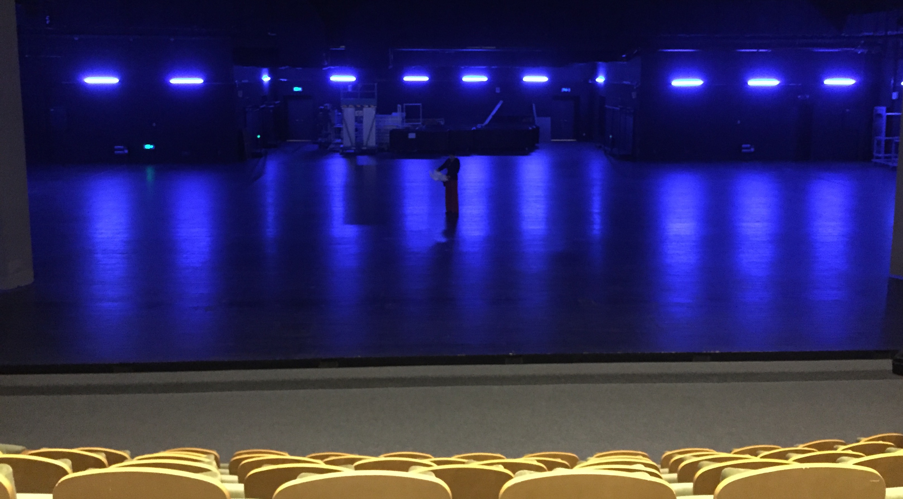
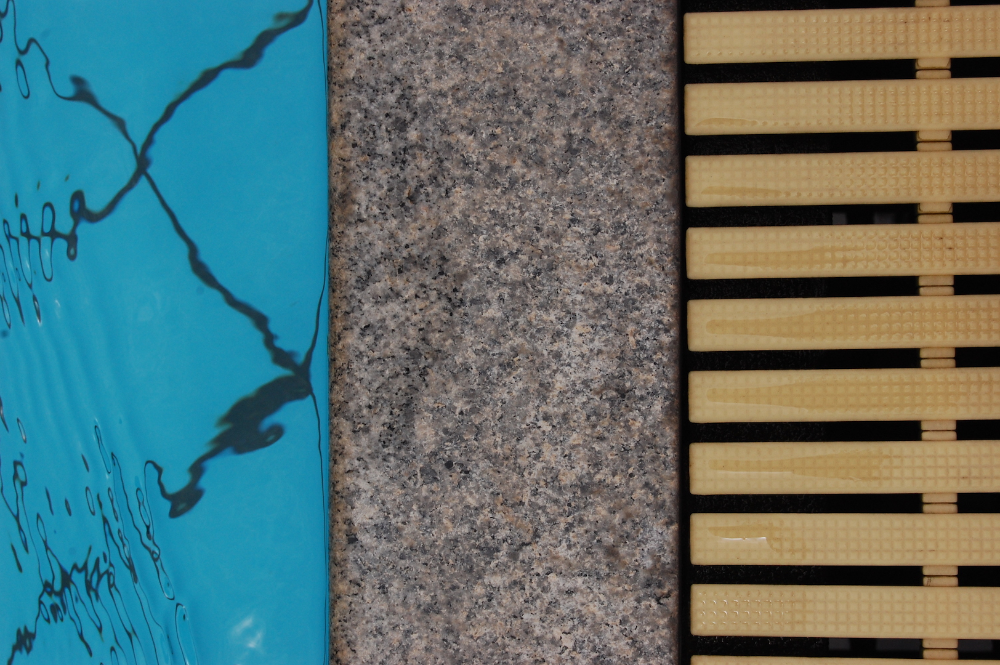
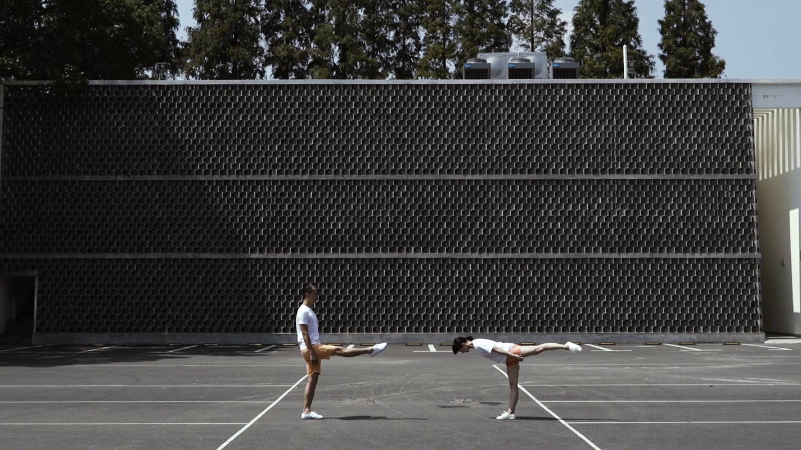
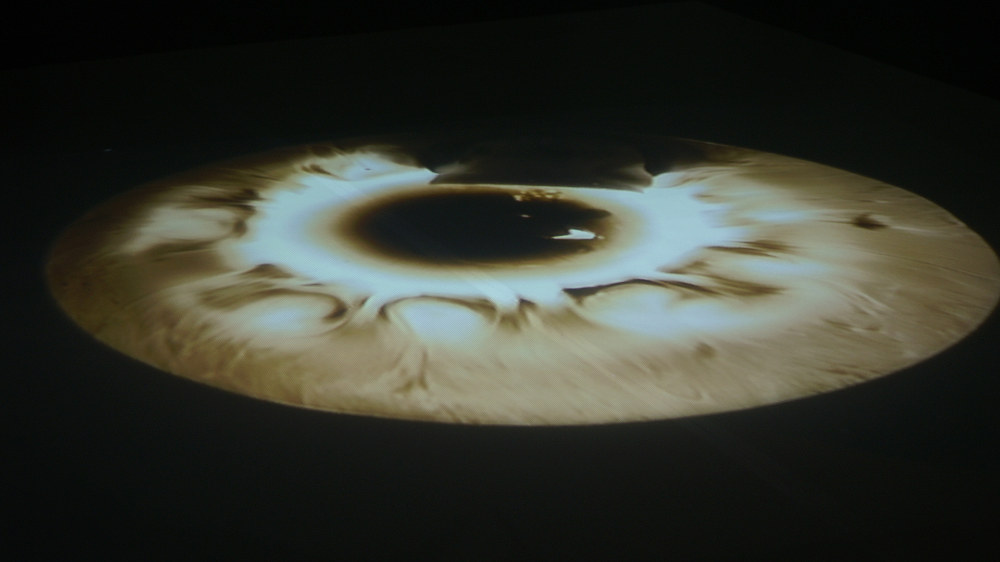
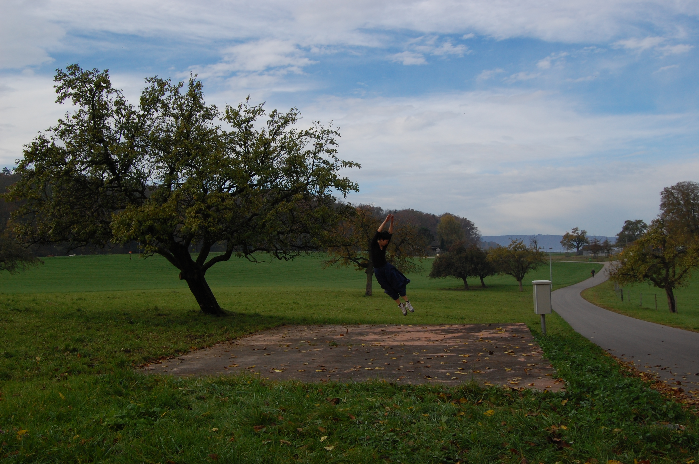
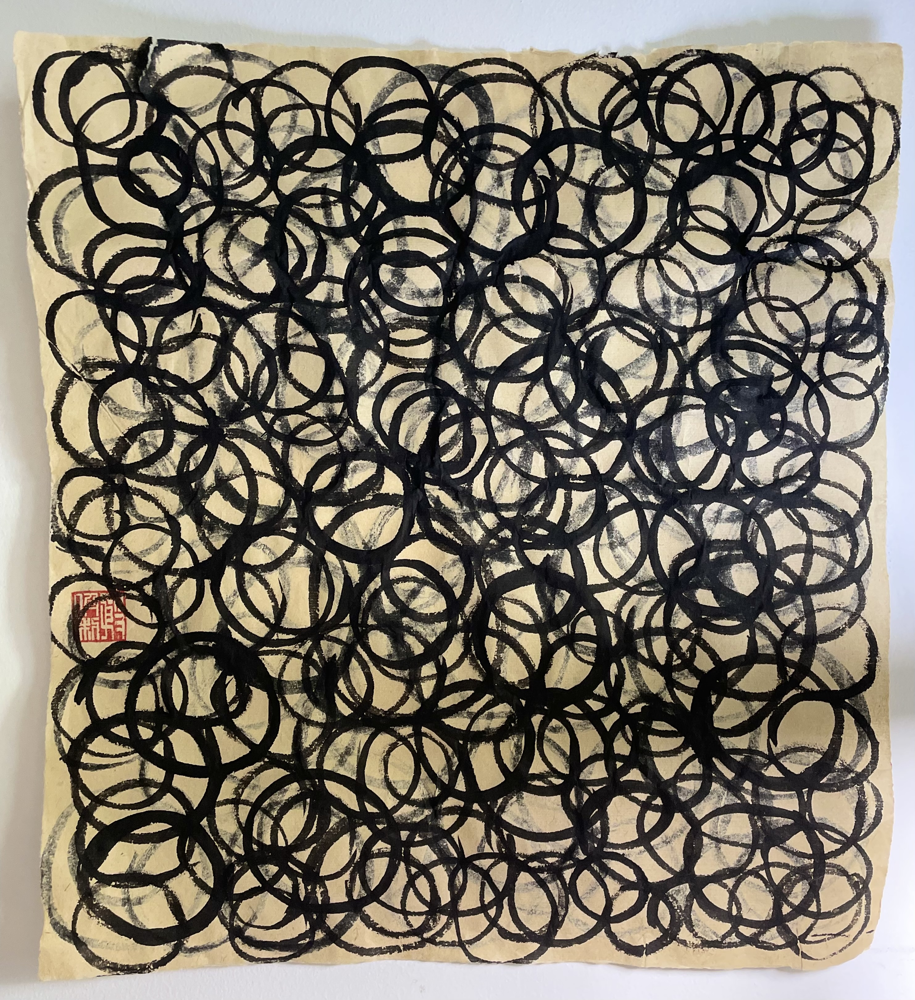

My intimacy with music began in the summer after junior high school graduation. More precisely, it wasn't intimacy but necessity. It all came down to hormones.
From forming rock bands to creating avant-garde electronic music, it wasn't just that I experienced the profound technological transformation of the music industry at the turn of the century, but also my contemplation and ideology about music itself.
Today's music is increasingly powerless. On one hand, everyone believes it should be the king in its own self-legislated realm; on the other hand, it continuously provides the means of production for the music industry and commerce. Radical music either becomes institutionalized as classic avant-garde or simply adopts a confrontational stance.
Music is powerless to respond to the real world. Yet it seems we cannot do without it.






